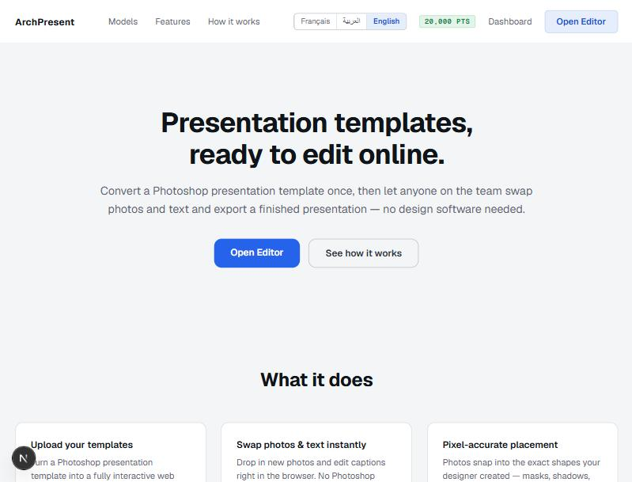
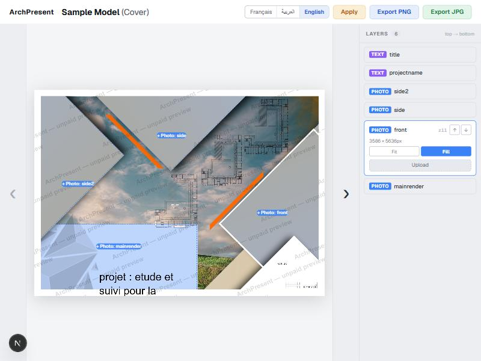
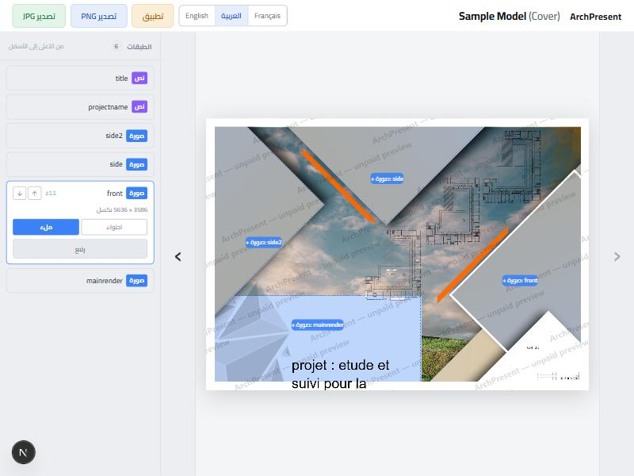
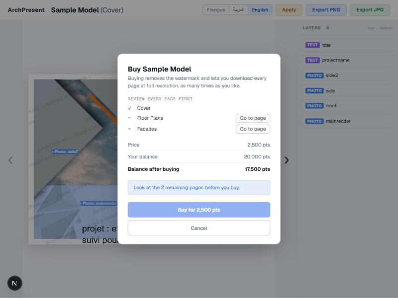
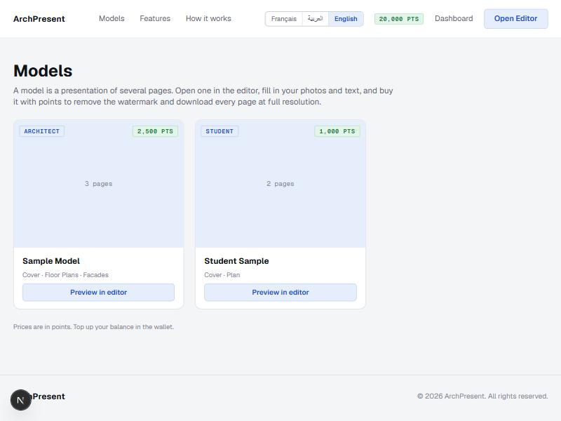
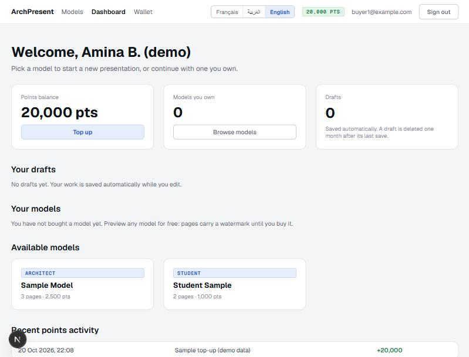
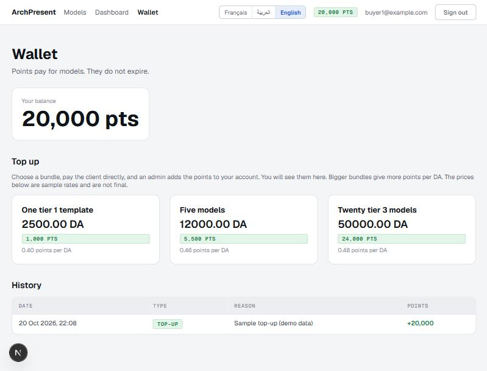
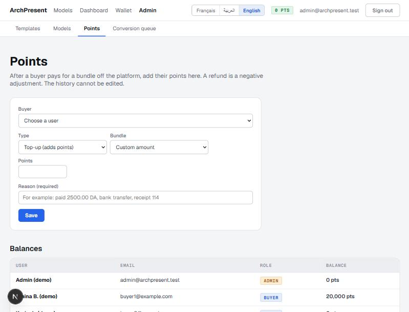

Website design brief
ArchPresent is a desktop web platform where architects, architecture students and design offices build print-ready presentations in about 15 minutes, instead of a week in Photoshop.
The one thing it must do well is speed, without losing the quality needed to print at A0. The design should help a buyer finish a presentation quickly and never doubt what is happening to their work.
| User | What they do | What worries them |
|---|---|---|
| Buyer students, architects, offices | Browses models, fills a model with photos and text, reviews every page, buys it with points, exports and prints. All three groups follow the same path; only quality and price differ. | Print quality that looks fine on screen but pixelates at A0. Losing work to a power or internet cut (common in Algeria). Slow exports. |
| Admin the client and the developer | Uploads Photoshop files, reviews and publishes designs, sets model prices, tops up and adjusts users' points. | A bad template going live. A wrong balance. |
| Designer later | Outside designers who make templates and earn a commission. Not part of the first four months: please do not design for them now. | - |
Device: desktop only. Phones and tablets are not supported on purpose, so there is no mobile design to make.
All screens exist today as a working but plain version, built on placeholder data with minimal style. The screenshots below are the current state, in light theme, to show what is there, not what it should look like.
| Screen | Purpose | States to design |
|---|---|---|
| Home / | Marketing page: what the product does, how it works, open the editor. | Signed out and signed in header. Its copy is still the earlier generic text and will be rewritten. |
| Models gallery /models | Browse models: tier (student, architect, bureau), price in points, page count. | Empty (nothing published), owned vs not owned. Cards need a real preview image; today they show a plain placeholder. Previews will be watermarked. |
| Editor /editor?model=... | The main tool. See below. | Loading, error, selected layer, text selected, photo zone empty and filled, print-quality warnings, saving status. |
| Buy dialog | Review every page, then buy with points. | Signed out, not enough points (links to the wallet), pages not yet reviewed, ready to buy, error. |
| Export progress dialog | Shown while a full-resolution export runs: stage, progress bar, expected time. | Loading images, rendering, writing the file, done. |
| Sign in, create account /login, /signup | Email and password, and Google later. | Errors (missing field, passwords do not match). |
| Dashboard /dashboard | The buyer's home: balance, models owned, saved drafts (kept one month), recent points activity. | No drafts, no purchases, many items. |
| Wallet /wallet | Balance, the top-up bundles on offer (price in DA, points), and the full points history. | Empty history. Prices always show as 12000.00 DA. |
| Admin /admin ... | Four tabs: templates on disk, models (tier, price, visibility), points (top-up and adjust a balance), conversion queue (with expected finish time). | Forms, dense tables, empty and error states. Used by two people, so efficiency matters more than polish. |

The editor is one full-screen screen, not a website page. Today it has:







12000.00 DA. Points show as 20,000 pts and, in Arabic, 20,000 نقطة.This matters because it decides what a design can ask for and how quickly it can be applied.
app/tokens.css), with a light and a dark value for the colors. The Style Ledger page is generated from that file, so the token names and values are always documented.app/lib/ui.js, built only from tokens.ui.js, and then adjusting the layout of the pages that differ.web folder run npm install and npm run dev, and open http://localhost:3000.admin signs in as an admin, and buyer1@example.com starts with 20,000 points. Everything behind the pages is a placeholder kept in the browser./models and choose "Preview in editor". The sample model has three pages.These are the tokens the whole app is built from, with their current light and dark values. Fill the right-hand columns with your values and the design can be applied by changing them. The list is generated from the app's token file.